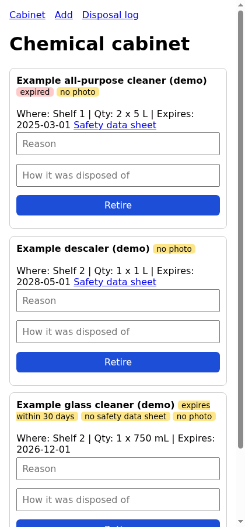

What it does
One page per cupboard
List every product with where it is kept, quantity, opened and expiry dates.
Photo and safety data sheet
Take the photo from your phone. Attach the PDF safety data sheet to the product so it is one tap away.
Reminders on the page
Items are flagged when expired, expiring within 30 days, or missing an expiry date, photo or safety data sheet.
Disposal log
Retire a product with the reason and how it was disposed of. The log keeps the history.
What it looks like


Run it
Python 3.9 or newer. No packages to install, no accounts, no external services.
git clone https://github.com/HALCONDEORO/chemical-cabinet cd chemical-cabinet python -m chemical_cabinet --data ./data --port 8080
Open http://localhost:8080. Everything is stored in the data folder: copy it to back up.
What it is not
It is a tracking aid. It does not check legal compliance, does not tell you which products are safe to store together, and does not replace the manufacturer's safety data sheet, a written risk assessment or your national regulator's guidance.
Other open source tools
Several free chemical inventory tools already exist, mostly built for university labs. If you run a lab, look at them first. This project aims at something smaller: one cupboard, no database server, nothing to install. We read the others for ideas only and copied none of their code, because most use GPL or AGPL licenses.
| Project | Aimed at | License (as listed on its page) |
|---|---|---|
| open_enventory | Labs: inventory and electronic lab notebook (PHP) | AGPL (per the US fork listing) |
| gochimitheque | Labs (Go) | GPL v3 |
| Pretzel | Hazardous chemical stock, desktop app | GPL v3 |
| TuDa.CIMS | University chemical stock | MIT |
| lab-inventory | Lab equipment and consumables | MIT |
| cheminv | Lab chemicals by location (MySQL) | CC BY-NC-SA 3.0 |
The Irish Health and Safety Authority also publishes a chemical inventory template as a spreadsheet. Details are in docs/ALTERNATIVES.md. This list is a quick look, not a complete survey.